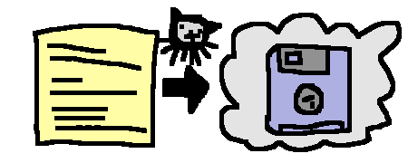

jot -u
✅ Success
tl;dr
My mini note-taking CLI tool jot can now back-up jottings to a GitHub gist, thanks to GitHub’s gh CLI.
Always Be Jotting
Last time I told you I’ve been using jot for months. It’s my opinionated CLI tool to record stuff that I can reflect on later. I just type something like jot "promoted synergy" in the terminal and move on.
And now there’s 1200 jottings.
But there’s only one text file.
A backup might be handy, eh.
Copy-waste
I had been copy-pasting the jot file into a private GitHub gist1 at the end of each week. Gists are used mostly for throwaway scratch files, code snippets and text files.
Given that jot is a personal project and I want to make things easier for myself2, I think this is fine as a backup host. It’s what I’m doing already, after all.
But oof, copy-paste? We can do better. So I built in a new option into jot to support upload to a gist.
This is now available in the dev version (v0.3.0.dev1) available from GitHub like uv tool install git+https://github.com/matt-dray/jot3. I’ll be testing it for a while before it goes in the stable release4.
With this dev version I can now run jot -u (short for --upload) every so often. No more filthy copy-pasting.
Gistjacking
Well, there’s a bit more to it than that.
There are some obvious checks and inputs required when jot -u is run. The upload_jottings() function has a series of hoops:
- Is the GitHub CLI gh installed? If not, prompt installation.
- Is there an internet connection? You can’t upload if not, obv.
- Is the user logged into a GitHub account? If not, prompt
gh auth login. - Is there a
GIST_IDvalue in the config file? If not, prompt for it (it’s the 32-character string in the gist’s URL, or found viagh gist list). - Does the
GIST_IDmatch an actual gist ID in your account? The gist must already exist. - Is there a jot file path recorded in the config? If not, prompt the user to create one.
If that’s all cleared, it runs subprocess.run(["gh", "gist", "edit", gist_id, jot_path]) to upload the contents of the jot file. This is equivalent to running the equivalent gh command directly from the terminal, but with extra defensive steps.
In other words, I’ve hijacked gh to do all the hard work, lol. This is great, becuase I want jot to be minimal and require little maintenance. Thanks Michaelsoft.
I jot u
It’s a clear limitation that --upload only uploads to a GitHub gist. I’m a simple chap, this is fine for me for now.
But the interface could be tweaked in future to allow for other hosts. Maybe in the form jot --upload <host>. The CLI logic could react to <host> to decide what credentials and values are needed for the upload.
Oh no, what if someone contributed to my poor little project with their favoured host? 🥺
Environment
Session info
[project]
name = "2026-06-06-jot-gist"
version = "0.1.0"
requires-python = ">=3.12"
dependencies = []Footnotes
To prevent gif-style flamewars, it’s pronounced ‘gist’.↩︎
This is why people caveat their work with ‘opinionated’ by the way; it translates to ‘works for me, lol’.↩︎
You could install with pipx if you prefer.↩︎
The stable version is available from PyPi like
uv tool install jot-cli.↩︎